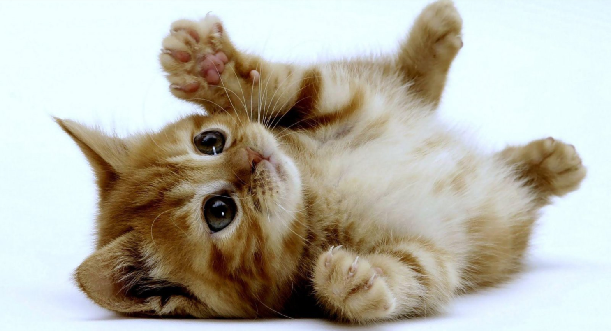

GATOS EN ADOPCION
Se ha comprobado que tener un gato reduce el estrés. Normalmente los dueños de gatos tienen una tensión arterial más baja que las personas sin mascotas. Puedes beneficiarte de un sistema inmunológico más fuerte y recuperarte de las enfermedades antes que las personas que no tienen animales de compañía.
Gatitos que buscan familia
Volver al inicio
Gotas
 ¿Quieres saber mas sobre mi?...Garfield
 ¿Quieres saber mas sobre mi?...
¿Quieres saber mas sobre mi?...
Gato
 ¿Quieres saber mas sobre mi?...
¿Quieres saber mas sobre mi?...